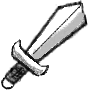

UX Case Study: WCS
Take a look at our proposed redesign of the Wild Conservation Society's Website.
Our Goal
The WCS, or "Wildlife Conservation Society" is a non-profit organization dedicated to the protection of wildlife. They are a global organization, operating in over 65 countries. They also own many zoos and an aquarium. As successful as they are, surprisingly enough, their website leaves a lot to be desired. So as a team, Justin Blake, Theresa Hoang, and I created a prototype for what an improved WCS website could look like. Unfortunately, the WCS themselves weren't keen on the idea of giving us any useful information to start with. But through careful research and a lot of testing, we were able to create a mockup that improves upon the WCS' current design.
Heuristic Analysis 
Looking at their current site, its plain to see that there is room for improvement. Why does it have this big fat side navigation? Why not have it on the top like most other websites? The way images are stitched together here doesn't really look nice on desktop, and there are three big competing headlines screaming right at you from the start. None of which really inform you what the WCS is about other than the fact that they have something to do with animals.
On some parts of the website, they even have a side navigation and a top
navigation.
Why is that? Why not have the global nav and the primary nav stacked on top of each other?
framing the content of the page like this just seems sort of odd.

Their donation page doesn't seem too bad. But the footer is always peeking up
from the bottom a little bit for some reason. No matter where you are on the page the very top
of the footer
follows you, and this is just awful. The footer is of no use if you can't see the whole thing,
and it just gets in the way. On the bright side, we loved the way their donation process
actually worked. The buttons
are simple, eye catching, and informative. Making a donation is relatively painless and this
page actually looks pretty good on mobile. But on desktop it definitely needs a rework.
UX Research 
With nothing to go off of from the WCS themselves, we began our research from scratch. Conducting interviews, gathering survey data, and testing the current website with various users. We then synthesized that data into an affinity diagram, created a user persona, and a storyboard. We found through our research that many people are interested in wildlife conservation. However, a lot of them, especially younger people, would rather volunteer or sign petitions than donate. As far as UI is concerned, many of our testers had the same issues with the website that we did and almost all of them complained about the navigation.


Low Fidelity Mockups 
We decided that the goal of our prototype should be to entice people to contribute in any
way they can. Not only with donations, but also through inexpensive means such as
volunteering and signing petitions. We wanted to make this quick, easy, and ensure that it
doesn't take you away from browsing the rest of the website.
The user flow pictured below demonstrates our intended interaction with the website.
Ideally, at any point during someone's visit they should be able to do something to help the
WCS.

From what we saw on the website previously, the donation process is actually fairly
short. So we decided to scrap the donation page in favor of a modal.
The idea being that getting through the process on a modal with a couple of quick forms would
flow well with the experience of browsing articles. This also let you get right back to what you
were doing when you're
done donating. This is good not only because it's pleasant, but the longer you stick around the
more likely you are to do something else. Like signing a petition or signing up to volunteer. In
the images below you
can see a quick paper sketch and a low fidelity mockup of the modal. You can also see that we
scrapped the sidebar on desktop.


We actually wanted to put volunteering and petition signing on modals too. But it became
very apparent that each of those causes warranted its own page,
so we opted for just having a clearer call to action on each of them instead.
High Fidelity Mockups 
After extensive testing on the previous prototype, we created high fidelity prototypes for both mobile and desktop versions of the website. This is the homepage on desktop:

And here is an image of it on mobile:
So as you can see, we changed the website quite a bit in our design. We didn't really change the branding very much, but we changed the arrangement of the various elements on the page quite a bit. The images are arranged much better and each of them has a clear call to action. In particular, the hero image and text at the start of the page clearly and concisely tell you what the WCS stands for and prompts you to contribute immediately. On the desktop version of the prototype, each of these CTAs have their own page. I highly recommend that you try both of the prototypes for yourself. There's a lot more to them than the images I just showed you. There may yet still be room to improve this, but if this redesign was really going to be used, I think the changes we made would improve the site significantly.
Try It Yourself
If you want to try the prototypes, click the links below to try them out on Invision.
Get In Touch
Email: rami.gshreim@gmail.com | Phone: (949)-732-8483 |